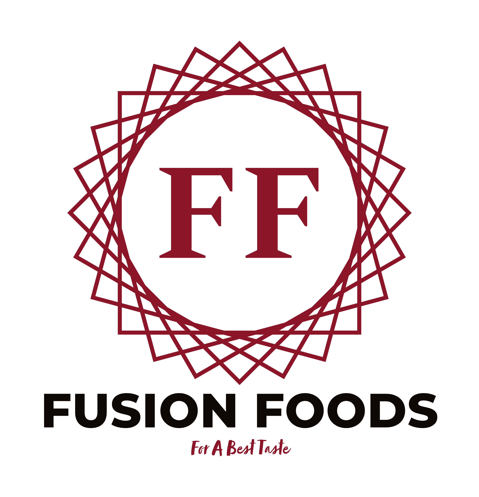

There is nothing like a first impression but it takes more than mere introduction to start an enduring relationship. FUSION FOOD's is a notched, revered and renowned company based in Anantapur, A.P with an enormous consideration on Quality and Quantity based Manufacturing, Exporting and, supplying of Dehydrated Fruits and Vegetables and various new Formulation of Food materials. We follow a philosophy of perfection in our offering which is an daily consuming foods at Fusion foods. The company is completely dedicated to let its clients enjoy the highest level of quality.
The customer can take a back seat once they are placing an order at Fusion Foods. We have a culture either we do it at the best possible level or we don’t do .Our philosophy of working has earned a huge repute which is not only confined to India but has reached abroad as well.
Our process is small batch and slow and hence we can cater to custom air-drying requirements of all consumers.
Each gram of HUKI is equivalent to flavors of 10g of the fruit or veg. The moisture is removed, but the flavors get concentrated!
Right from our ingredients to our drying & packaging machinery, everything is proudly made in India.
Fusion Food can be ground to make flavourful and 100% natural powders. They can be had as is or even used as an infusion.